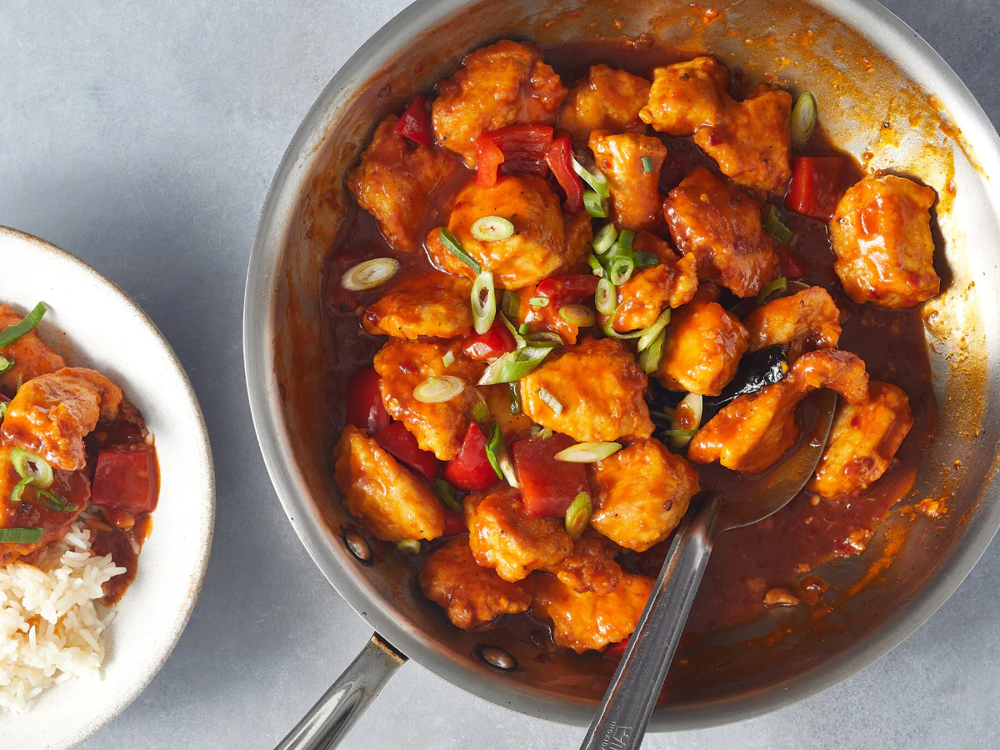

Chicken Manchurian Recipe
by chef Cho

Chicken Manchurian is a simple and savory dish with an element of freshness delivered by the fragrant and flavorful cilantro. Serve immediately over white rice.
Ingredients:
- 1 egg, beaten
- 1 ½ tablespoons all-purpose flour
- 1 ½ tablespoons corn flour
- 1 pinch salt and ground black pepper to taste
- 1 pound chicken, cut into cubes
- vegetable oil for frying
- 2 tablespoons vegetable oil
- 2 tablespoons crushed fresh ginger root
- 2 tablespoons crushed garlic
- ½ cup chopped fresh cilantro
- 2 serrano chile peppers, cut into 1/4-inch pieces, or more to taste
- 1 cup chicken stock
- 2 tablespoons soy sauce
- ¼ teaspoon white sugar
- ¼ teaspoon ground black pepper
- ¼ teaspoon monosodium glutamate (such as Ajinomoto®) (Optional)
- ½ green bell pepper, cut into 1-inch pieces
- ½ cup water
- 2 tablespoons corn flour
Recipe Steps:
- Beat egg in a large bowl. Mix all-purpose flour and 1 1/2 tablespoons corn flour into egg until batter is smooth; season with salt and pepper. Dip chicken into batter, working in batches, until coated; place on a plate in a single layer so the pieces do not touch.
- Heat a skillet over medium-high heat; add enough vegetable oil to reach about 1/2-inch depth. Fry battered chicken, working in batches, in the hot oil until no longer pink in the center, 5 to 10 minutes. Transfer cooked chicken, using a slotted spoon, to a paper towel-lined plate to drain.
- Heat 2 tablespoons vegetable oil in skillet over medium heat; cook and stir ginger and garlic until lightly browned, 1 to 2 minutes. Add cilantro and serrano peppers; reduce heat to medium-low.
- Mix chicken stock, soy sauce, sugar, 1/4 teaspoon black pepper, and monosodium glutamate into garlic-ginger mixture; cook and stir until sauce is heated through, about 5 minutes. Add green bell pepper to sauce and cook until slightly tender, 2 to 3 minutes.
- Whisk water and 2 tablespoons corn flour together in a bowl until smooth; stir into sauce until incorporated. Bring sauce to a boil. Add chicken and stir to coat.
Go Back